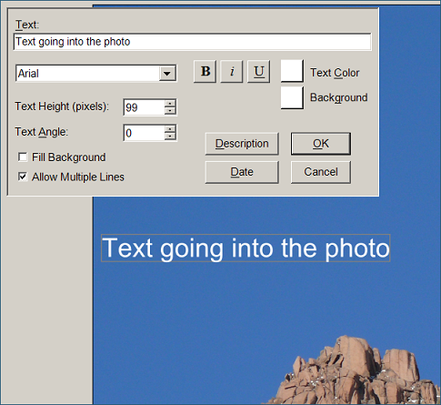

The text entered in the dialog box is displayed on the drawing. It can be dragged to any location,
and the box around the text can be sized to change the size of the text. You can also specify the
text height, in pixels, and the angle of the text if you want something other than horizontal text.

The text can have a transparent or filled background, selectable by the "Fill background" check
box.
When you drag the edges or corner of the box around the text, the size of the text will change to
fit the box. You can check "Allow multiple lines" if you want the text to fit into the box with multiple
lines.
The Description and Date buttons can be used to add the description and date from the photo file
into the text. These buttons are enabled if the original file has this information.
When the text is positioned, you can press Enter or click on the photo outside the text box to
complete the addition of text into the photo. The text will be anti-aliased with the background of
the photo, giving smooth edges to the characters.